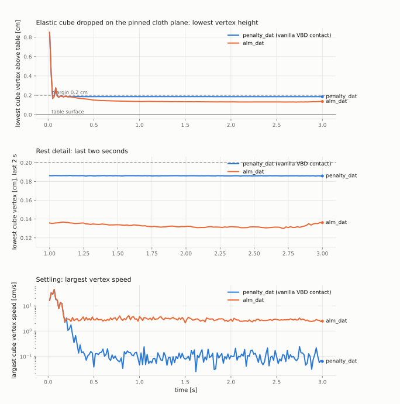

python -m newton.examples vbd_rest_on_contact on the default penalty_dat path and on the
alm_dat path with the new Coulomb friction and gap-rate damping. Branch ankac/alm-dat-fable-review, snapshot 986b7c92 plus the example commit, CPU run, Warp 1.17.0, 2026-10-05.
Left: the shipped behavior, penalty contact with Coulomb friction mu = 0.5, gap-rate damping kd = 100 and per-color Divide-and-Truncate. Right: the ALM contact row with stored division planes, now with Coulomb friction (a tangential multiplier capped at mu times the row's normal force) and gap-rate damping of the closing motion inside the margin. Both stacks land, settle and rest one margin apart; the mean sheet heights agree to 0.002 cm (0.195 / 0.391 / 0.563 / 0.771 versus 0.196 / 0.393 / 0.565 / 0.773 cm), the vertical jitter over the last two seconds is of the same size on both (0.010 to 0.015 versus 0.004 to 0.016 cm), and the largest sheet speed over the last two seconds is 5.4 cm/s on the default path and 8.7 cm/s on alm_dat. No vertex touches the table on either path and the detector's coverage flag stayed true on alm_dat for the whole run.
Left: the alm_dat row as first rendered, without friction or damping. The slightly rotated sheets slide apart at 20 to 25 cm/s, the first one reaches the 30 cm table edge at 0.85 s and tips over it, and the others follow; once off the table a sheet falls at exactly 76.5 cm/s, the per-substep DAT motion budget. Nothing interpenetrates, it is sliding. Right: the same row with friction and damping.
Friction-matched control: the default path with mu = 0 (left) against the first alm_dat version (right). Both frictionless runs slide off (first sheet vertex below the table surface at 1.12 s versus 0.85 s; peak sliding speed before leaving the table 24.2 versus 27.0 cm/s), so the dispersal was frictionless physics, not a contact-method defect.
| time | penalty_dat, mu = 0.5 | penalty_dat, mu = 0 | alm_dat, first version (no friction, no damping) | alm_dat, mu = 0.5 (friction + damping) |
|---|---|---|---|---|
| 0.25 s | 3.08 / +0.161 | 10.92 / +0.178 | 16.17 / +0.194 | 4.97 / +0.180 |
| 0.50 s | 3.15 / +0.168 | 15.68 / +0.195 | 23.30 / +0.194 | 3.45 / +0.187 |
| 0.75 s | 1.56 / +0.176 | 19.69 / +0.194 | 25.31 / +0.192 | 4.51 / +0.186 |
| 1.00 s | 2.38 / +0.169 | 18.73 / +0.194 | 43.05 / -4.205 | 3.90 / +0.187 |
| 1.50 s | 3.01 / +0.171 | 87.07 / -16.313 | 76.50 / -35.407 | 5.96 / +0.189 |
| 2.00 s | 4.02 / +0.186 | 82.45 / -56.287 | 76.50 / -73.657 | 6.25 / +0.178 |
| 3.00 s | 1.75 / +0.172 | 88.50 / -136.316 | 76.50 / -150.158 | 5.22 / +0.187 |
| 4.00 s | 3.31 / +0.164 | 84.95 / -216.309 | 76.50 / -226.659 | 6.07 / +0.187 |
| 4.98 s | 3.54 / +0.176 | 81.59 / -295.250 | 76.50 / -301.886 | 8.70 / +0.186 |
| penalty_dat, mu = 0.5 | penalty_dat, mu = 0 | alm_dat, first version (no friction, no damping) | alm_dat, mu = 0.5 (friction + damping) | |
|---|---|---|---|---|
| first sheet vertex below the table surface | never | 1.12 s | 0.85 s | never |
| largest sheet speed over the last 2 s [cm/s] | 5.41 | 151.54 | 76.50 | 8.70 |
| render wall time (CPU, 300 frames) | 365 s | 353 s | 273 s | 375 s |
Only meaningful for runs whose sheets are still on the table; falling sheets show large negative heights.
| sheet | penalty_dat, mu = 0.5 | penalty_dat, mu = 0 | alm_dat, first version (no friction, no damping) | alm_dat, mu = 0.5 (friction + damping) |
|---|---|---|---|---|
| sheet 0 | 0.1948 / 0.01001 | 0.1997 / 0.00006 | -171.0260 / 44.16661 | 0.1958 / 0.00362 |
| sheet 1 | 0.3907 / 0.01353 | -10.2292 / 19.11110 | -219.9434 / 44.16661 | 0.3925 / 0.00683 |
| sheet 2 | 0.5631 / 0.01474 | -210.6022 / 46.40108 | -220.8856 / 44.16661 | 0.5649 / 0.01438 |
| sheet 3 | 0.7710 / 0.01446 | -207.4097 / 45.60289 | -119.5769 / 44.16661 | 0.7731 / 0.01581 |

A 4x4x4 cm tetrahedral cube (density 1 g/cm3, 125 g lumped, k_mu = k_lambda = 1e+05 dyn/cm2, no material damping) starts with its bottom face 1 cm above the pinned 16x16 cm cloth table and falls under gravity. Same contact settings as above (margin 0.2 cm, gap 0.1 cm, ke 1e+04, kd 1e+02, mu 0.5), 5 iterations, 10 substeps, 60 fps. Curves are the lowest cube vertex above the table and the largest vertex speed; the dashed line is the margin.
| penalty_dat (vanilla) | alm_dat | |
|---|---|---|
| first contact (lowest vertex reaches the margin) | 0.05 s | 0.05 s |
| highest rebound of the lowest vertex after contact [cm] | 0.277 | 0.274 |
| settled (every vertex below 1 cm/s from then on) | 0.27 s | never |
| rest height of the lowest vertex, mean over the last second [cm] | 0.1860 | 0.1318 |
| rest jitter of the lowest vertex, std / range over the last second [cm] | 7.2e-05 / 4.1e-04 | 1.3e-03 / 6.2e-03 |
| largest vertex speed over the last second [cm/s] | 0.240 | 3.277 |
| lowest vertex height over the whole run [cm] (0 is the table) | 0.1662 | 0.1300 |
| detector coverage flag true on every frame | True | True |
Both paths land and rebound alike. The vanilla path settles within a quarter second and rests one cushion deflection below the margin with sub-micron jitter. The ALM path rests lower because its linear cushion (K = 1e4 dyn/cm per row) is softer than the penalty barrier near the rest point, and it keeps a few cm/s of elastic ringing: the cube has no material damping and the contact damping only acts on closing motion. Before friction and damping were added the ALM cube rested at 0.115 cm with five times the jitter and was still drifting down at 3 s.
Four 10x10 cm cloth sheets (1 cm cells, 0.02 g/cm2, tri_ke = tri_ka = 1e4, edge_ke = 5, absolute damping tri_kd 0.015 and edge_kd 0.05, contact ke 1e4 and kd 100) start 0.5 cm apart above a pinned 30x30 cm cloth sheet that acts as the table, each shifted by up to 0.2 cm and rotated by up to 0.1 rad. The table is cloth with zero mass, so sheet-on-table and sheet-on-sheet contacts both run through the soft self-contact pipeline and the contact method is the only difference between runs. Self-contact margin 0.2 cm, detection gap 0.1 cm, the table itself has no thickness. 60 fps, 10 substeps, 5 VBD iterations, 300 frames.
penalty_dat): penalty force along the closest-point direction with friction and damping; the accumulated
displacement is clipped against freshly built division planes after every color. New path (alm_dat): one compliant ALM contact
row per detected pair with its multiplier carried across steps, division planes stored and rebuilt only at certified anchors, and the committed
state is the truncated anchor. The ALM row has no friction or damping yet.python -m newton.examples vbd_rest_on_contact python -m newton.examples vbd_rest_on_contact --contact-method alm_dat python -m newton.examples vbd_rest_on_contact --contact-mu 0.0 notes/vbd-rest-on-contact/render_comparison.py render --method ... --frames 300 (headless ViewerGL under Xvfb, CPU) notes/vbd-rest-on-contact/render_comparison.py compose --left penalty_dat --right alm_dat --name comparison notes/vbd-rest-on-contact/render_comparison.py compose --left penalty_dat_mu0 --right alm_dat --name comparison_frictionless